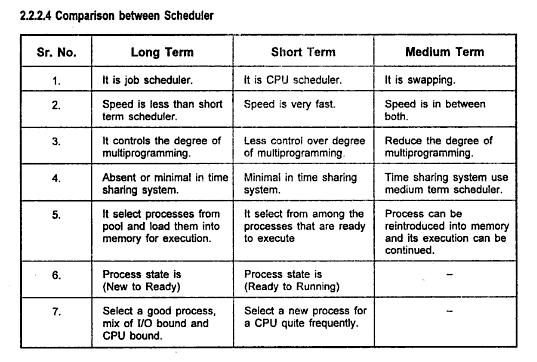

Types of Schedulers
There are three types of schedulers. They are classified according to the roles they perform.
They are
Each of these handles the co-ordination of processes differently.
(I.A Dhotre 2009, 2-7)
Long Term Schedulers
These are also called Job schedulers. The long term scheduler loads processes from the ready queue and loads them into memory ready for the CPU scheduler (Short Term Scheduler). The Long Term Schedulers role is to provide a balanced mix of processes for the system to handle which consists of I/O bound processes , processor bound processes and those which have both characteristics
(I.A Dhotre 2009, 2-7)
You can think of the Job scheduler as a manager that makes sure a team gets the right type of work to the correct team member.
Apart from loading up the Short Term Scheduler with a balanced mix of programs the Long Term Scheduler is also responsible for handling multiprogramming. It must monitor the amount of running processes and make sure the rate of process creation is equivalent or less than the rate of processes leaving the system so as not to bog the system down.
I.A Dhotre 2009, 2-7)
An analogy to multiprogramming monitoring is a manager that makes sure their team doesn?t have too much work and becomes inefficient due to work loads.
Medium Term Schedulers
The medium term scheduler is perhaps the most simple of the schedulers. Not simple in terms of the implementation but in terms of its task.
A Medium term scheduler is responsible for handling the load or degree of multiprogramming that is present in the Operating System.
It achieves reduction or increase of multiprogramming by swapping out processes.
(I.A Dhotre 2009, 2-8)
Please see the Figure 2.7 for reference.
(I.A Dhotre 2009, 2-8)
Short Term Schedulers
The Short Term Scheduler is also known as the CPU scheduler. Its role is to keep performance in accordance with a specified criteria.
The Short Term Scheduler places processes from the ready queue to the running queue. The placement depends upon the criteria.
These are detailed in Scheduling Algorithms ? Categories and Implementations. The decision is a highly detailed decision
and depends upon the Scheduling Algorithm.
Another name for the Short Term Scheduler is the dispatcher.
(I.A Dhotre 2009, 2-8)
A good summary of the above Types is in the chart 2.2.2.4 and Table 9.1 below. To understand from a diagrammatic perspective there is also a great chart which shows overviews in Figure 9.1 and 9.2 below.
(I.A Dhotre 2009, 2-8)
(William Stallings 2008, 406)
(William Stallings 2008, 407)
(William Stallings 2008,407)